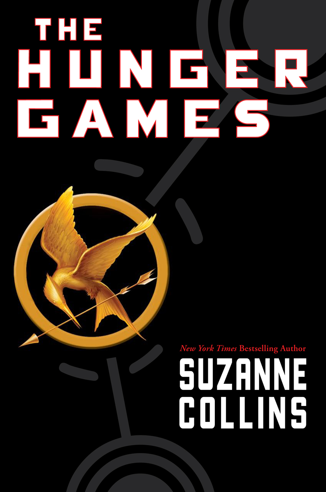
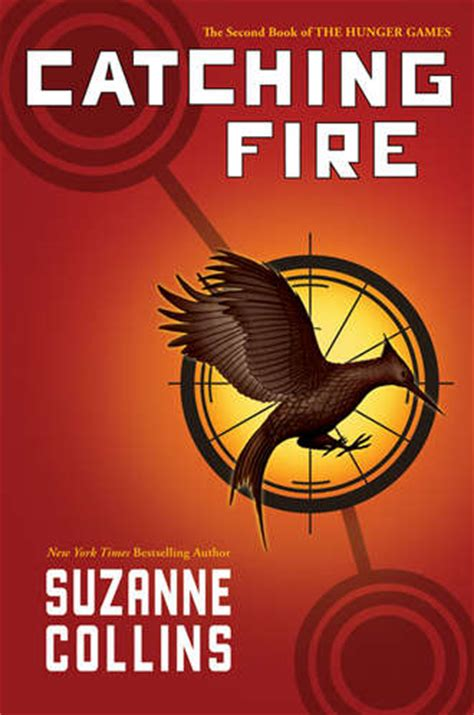
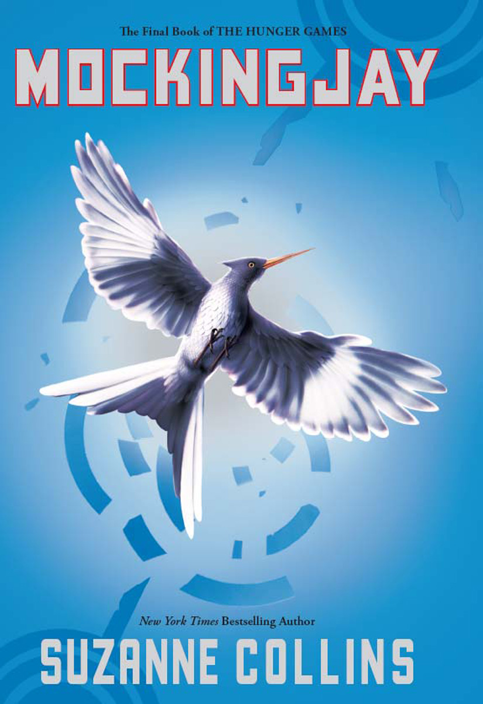

Be on the lookout for "The Ballad of Songbirds and Snakes"
See prior novels in the Hunger Games series!



The Hunger Games...
In a dystopian future, the totalitarian nation of Panem is divided into 12 districts and the Capitol.
Each year two young representatives from each district are selected by lottery to participate in The
Hunger Games. The 24 participants are forced to eliminate their competitors while the citizens of
Panem are required to watch. When 16-year-old Katniss' young sister, Prim, is selected as District
12's female representative, Katniss volunteers to take her place.
Catching Fire...
Twelve months after winning the 74th Hunger Games, Katniss Everdeen and her partner Peeta Mellark must go
on the Victor's Tour, but before leaving, Katniss is visited by President Snow who fears
that Katniss defied him a year ago during the games when she chose to die with Peeta. With both Katniss
and Peeta declared the winners, it is fueling a possible uprising. He tells Katniss that she must put out
the flames or else everyone she cares about will be in danger.
Mocking Jay...
The Hunger Games saga continues in this sequel that finds Katniss Everdeen faced with a decision that could
sway the fate of a nation. In the wake of the Quarter Quell, the Hunger Games have been changed forever, and
Katniss ends up in District 13. Her courage having inspired a nation, the brave young heroine heeds the advice
of her friends, and sets out to save Peeta. Meanwhile, Katniss' fragile alliance with President Coin could lead to disaster..